01 · Equal noise level
Full-sequence diffusion
Every sequential timestep denoises together, without an explicit temporal order.
Revisable Denoising for Robotic Sequential Prediction
A diffusion process that respects the temporal meaning of a
sequence
and preserves cross-horizon revisability.
Agency for Defense Development (ADD)
Project video
Full project video · 2 minutes 57 seconds
Overview · Three denoising processes
The same sequential prediction problem produces very different behavior depending on which horizon regions remain uncertain, resolve first, or become revisable again.
01 · Equal noise level
Every sequential timestep denoises together, without an explicit temporal order.
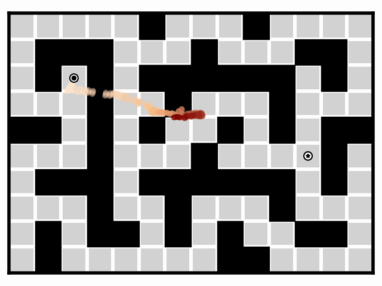
02 · Left-to-right order
Earlier timesteps resolve first, giving the diffusion process temporal direction.
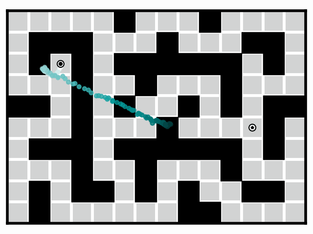
03 · Revisable denoising waves
Periodic re-noising reopens resolved regions so updated context can revise them.
Visualization: predicted clean trajectories x̂0 are shown in all three animations.
Robotics scope
ReRoll is evaluated beyond maze generation: it refines planned states, robot action chunks, and coupled video–action sequences.
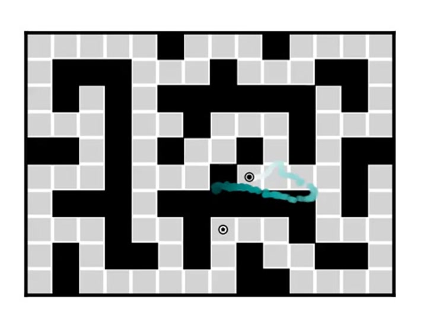
Offline RL benchmark
Goal guidance and endpoint inpainting on OGBench PointMaze and AntMaze.
Guidance · Inpainting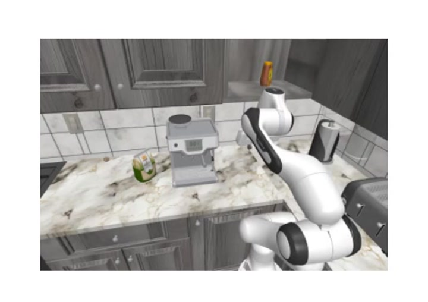
Diffusion Policy based
LIBERO-10 multi-task and RoboCasa single-task learning with different prediction horizons and observation-history lengths.
LIBERO-10 · RoboCasa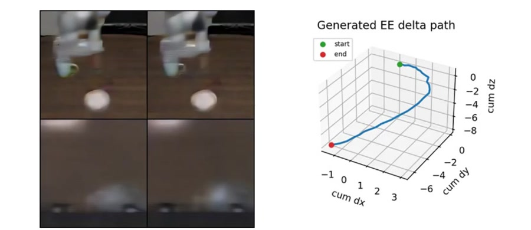
UWM based
Policy, inverse dynamics, future-video prediction, and action–video alignment.
Video · Action · AlignmentCore perspective
Earlier and later states, actions, and frames are not interchangeable. Their noise levels determine what is visible, uncertain, and still modifiable during generation.
ReRoll turns this noise schedule into a cross-horizon revision mechanism: resolved regions can become uncertain again, exchange information with the rest of the horizon, and settle into a more compatible sequence.
Characteristic mistakes
The problem is not simply whether denoising is global or causal. The crucial question is whether early decisions can still change after new cross-horizon context becomes useful.
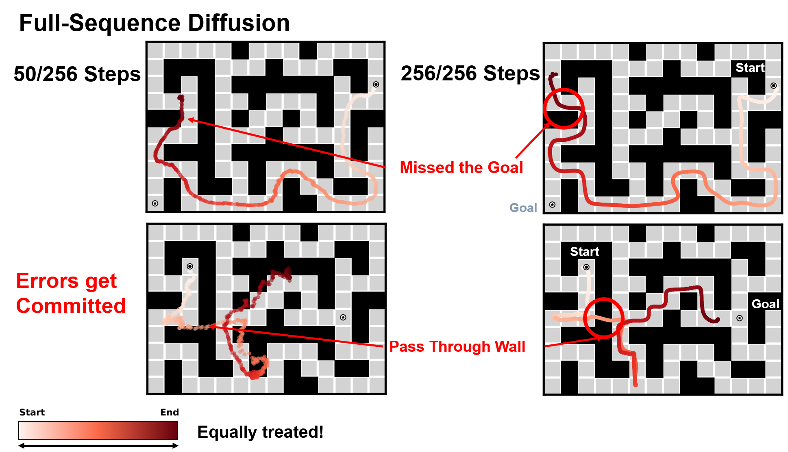
Full-sequence diffusion
Treating all timesteps equally provides global interaction, but does not express which regions should stay uncertain for later correction.
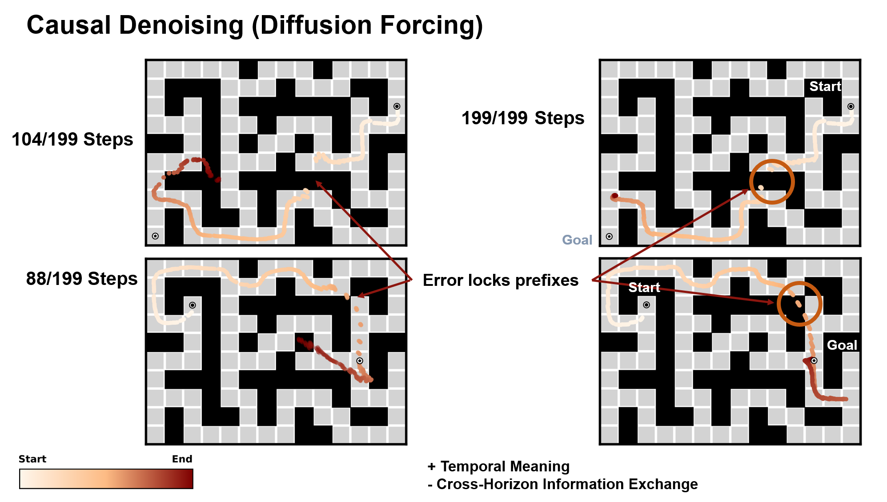
Causal denoising
Causal noise levels add temporal meaning, but low-noise prefixes become difficult to revise when later predictions reveal a mismatch.
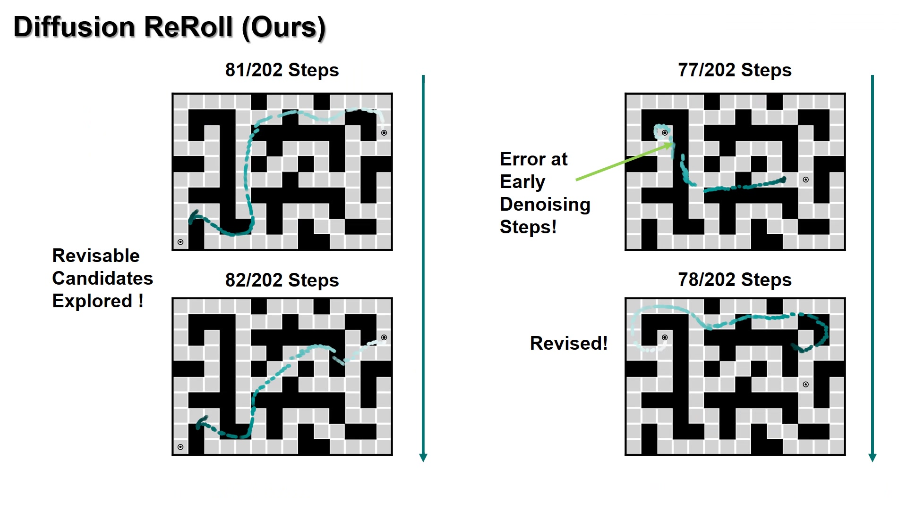
Diffusion ReRoll
A ReRoll event re-noises the affected region. The model explores another compatible candidate using updated context, naturally revising the earlier error.
Abstract
Diffusion-based sequence predictors commonly follow a single, irreversible denoising process. Diffusion ReRoll instead selectively re-noises sufficiently resolved regions while the rest of the horizon continues denoising. These regions can then be refined again using updated context from the sequence. The resulting structured re-noising enables cross-horizon revision while preserving local consistency. Across long-horizon planning, diffusion-policy-style action prediction, and unified video–action modeling, ReRoll improves performance over full-sequence and causal denoising baselines.
Method
ReRoll changes the token-wise noise schedule—not the underlying denoising architecture—to control when information can be revised across a sequence.
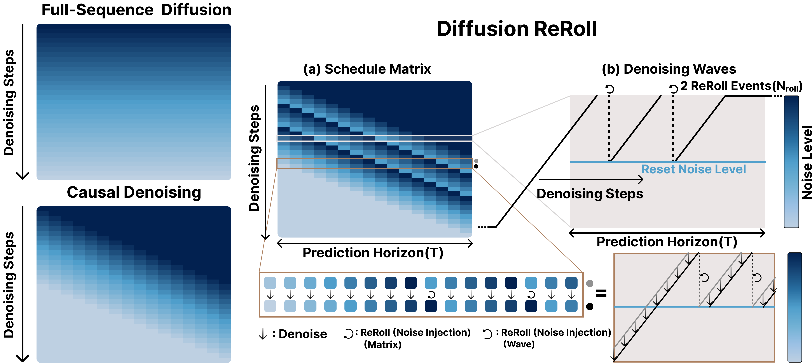
Deployment schedule
Linear noise-level chunks move across the prediction horizon. At the reset level, a ReRoll event raises uncertainty in a resolved region, connects it to the next denoising wave, and makes that region revisable again.
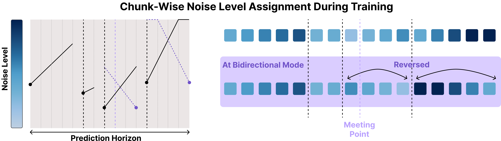
Training schedule
Diffusion Forcing introduced the noise-as-masking view by assigning different noise levels to different sequence positions. ReRoll builds on that idea with randomized piecewise-linear assignments, including reversed chunks for bidirectional generation.
This idea comes from Diffusion Forcing: a token's noise level acts like a soft mask, controlling how much information is visible and how freely the token can still change.
Randomized piecewise-linear profiles expose the model to the partial-information patterns used at deployment.
Periodic noise injection reopens resolved regions so updated context can correct them across the horizon.
Noise is not only removed—it is actively managed as a mechanism for revising sequential predictions.
Bidirectional mode
When both initial and terminal constraints are available, forward and backward denoising waves begin at opposite ends of the horizon. Their meeting point is adjustable, and each side can use its own slope, reset noise level, and number of ReRoll events. Unresolved regions remain noisy, so information from both endpoints can continue revising the sequence.
From the project video
This clip shows the bidirectional schedule in motion, followed by endpoint-conditioned examples in goal inpainting and inverse dynamics.
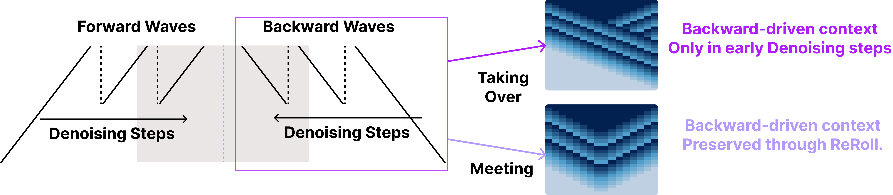
Matrix behavior
Taking over uses terminal-side context early and then returns to forward revision. Meeting preserves backward-driven context throughout ReRoll.
Taking-over matrix
Backward waves bring goal-side information into early revision. After the two sides overlap, forward waves take over, preserving a more causal final prediction structure.
Used for goal-inpainting maze planningMeeting matrix
Forward and backward waves meet and repeatedly refine the sequence from both sides, preserving terminal-to-initial influence throughout ReRoll.
Used for unified video–action modelingResults
Guidance-based replanning success
Average official-initialization success
OOD joint-policy success
Ablation · Noise injection
With zero ReRoll events, re-noising is removed and the schedule reduces to causal denoising. Adding selective noise-injection events improves long-horizon planning, policy learning, and unified video–action modeling before performance saturates, isolating repeated revision as a central source of the gains.
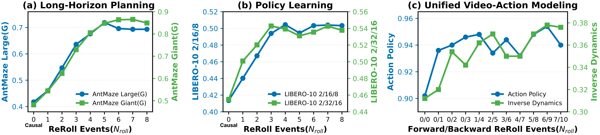
Swipe horizontally to inspect all three settings →
Evaluation coverage
OGBench
Long-horizon PointMaze and AntMaze tasks test both guided generation and terminal conditioning.
LIBERO-10
A Diffusion Policy-based model predicts action chunks across ten manipulation tasks.
RoboCasa
Different prediction horizons and observation-history lengths test robustness to sequence design.
Video–action modeling
UWM-based experiments evaluate future video, action prediction, inverse dynamics, and their alignment.
Conclusion
Diffusion ReRoll treats the noise schedule as a mechanism for information flow across time. By periodically restoring uncertainty, it preserves temporal structure without permanently locking early predictions.
The same principle improves long-horizon planning, manipulation-policy learning, and coupled video–action generation—providing a general route to revisable robotic sequential prediction.
BibTeX
@misc{kim2026diffusionreroll,
title = {Diffusion ReRoll: Revisable Denoising for
Robotic Sequential Prediction},
author = {Kim, Seonsoo and Hong, Seongil and Kang, Jun-Gill},
year = {2026}
}